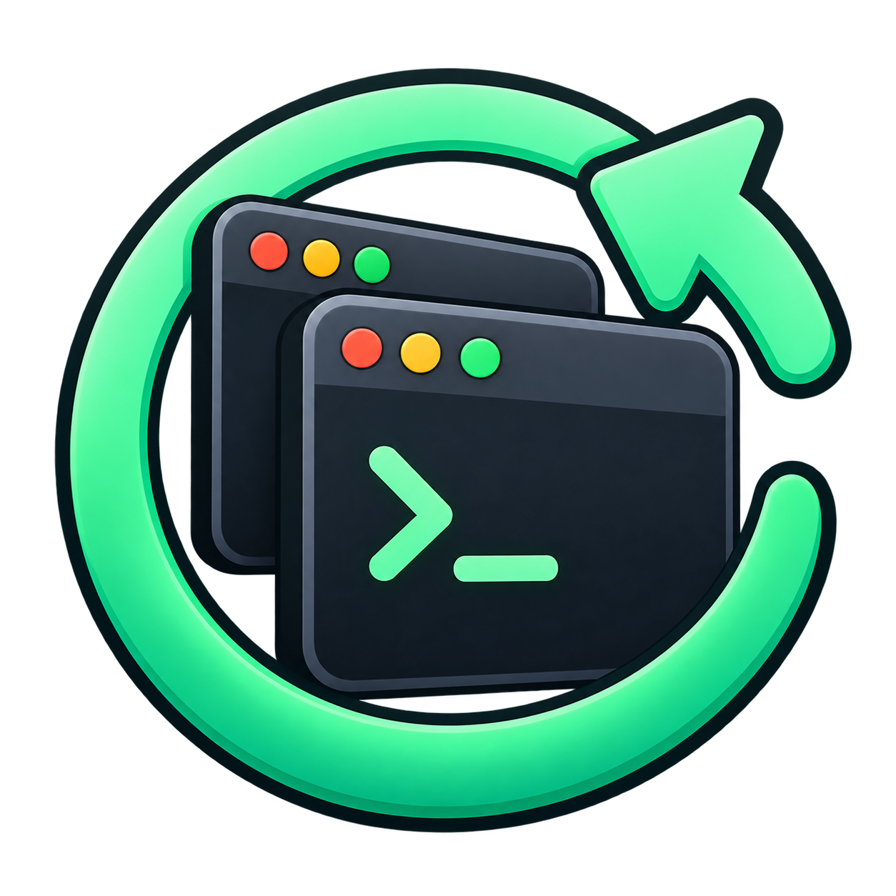

Quietly in your tray.
Sessions save every minute, with a final save on supported logout notifications. You keep working; Lazarus keeps a snapshot.

lazarusv0.1A second life for your Linux desktop
Your terminals had things going on. Lazarus remembers the work inside them—and brings your apps back, too.
Linux / X11 · Python · Early release
Pick up the thread
An empty terminal isn't a restored session. Lazarus captures the directory and foreground command, then chooses how to resume the work.
Sessions save every minute, with a final save on supported logout notifications. You keep working; Lazarus keeps a snapshot.
Resume Claude and Codex sessions. Restart your dev server or TUI. Reopen desktop apps. Detected running items are skipped.
Restore your previous session, start from a named profile, or restore nothing. Automatic saves leave your profiles untouched.
Small tool. Familiar workflow.
Start Lazarus, then choose Start Lazarus at Login from the tray. Use Restore at Login to pick your previous session or a saved profile.
Requires Python 3.10+, an X11 desktop, wmctrl, xprop, GTK 3, and PyGObject. The package command below is for Debian / Ubuntu.
Read the full setup guide →# Install desktop dependencies
sudo apt install python3 python3-gi \
gir1.2-gtk-3.0 wmctrl x11-utils git
# Grab Lazarus and start the tray
git clone https://github.com/anolis/lazarus.git
cd lazarus
./bin/lazarus
# Prefer the terminal? Preview a restore.
./bin/lazarus restore --dry-runKnow before you reboot
This is an early X11 release for Kitty and GNOME Terminal. Firefox relies on its own tab restore setting. Window placement and Wayland support are still ahead. AI sessions without explicit IDs resume the latest conversation in their directory. A full reboot recovery test is still pending.
Help shape what comes next ↗